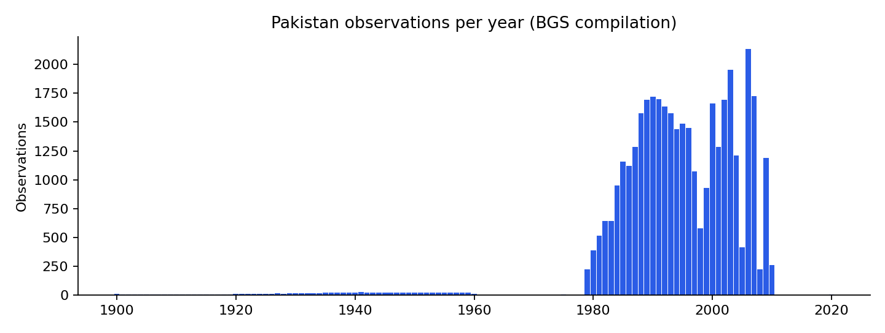
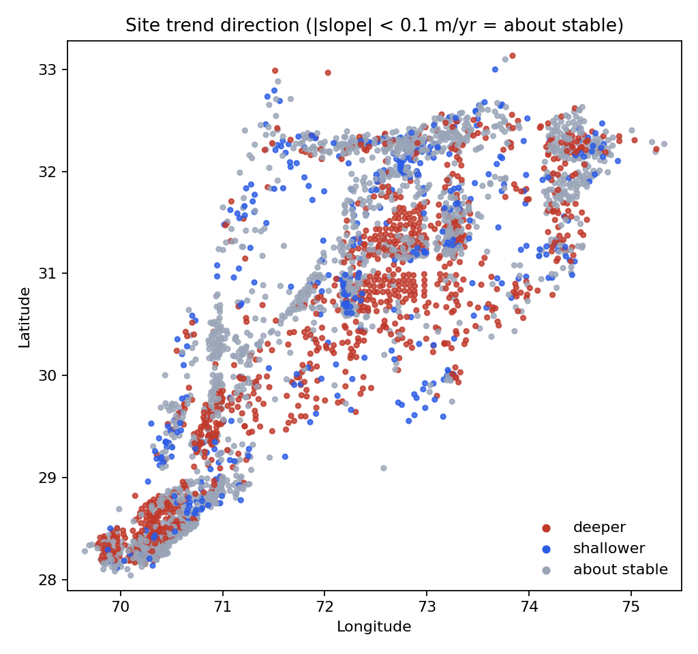

Open data · Pakistan
In Pakistan Punjab, about a third of long-record wells show water levels moving deeper
38,450 readings from 3,311 wells, one trend per well, and a check on how much the answer depends on short records.
By Muzammal Hussain · 8 November 2026 · 5 min read
Groundwater feeds most of Punjab's farms, but public numbers on it are hard to find. The British Geological Survey (BGS) published a compilation of well readings from Pakistan and northwest India. I separated the Pakistan wells, checked the data, and asked a simple question: in how many wells is the water level moving deeper below the ground?
Key findings
- The Pakistan part of the dataset has 38,450 readings from 3,311 wells. Almost all were taken between 1979 and 2010.
- Among the 1,750 wells with 10 or more readings, 37% have water levels moving deeper (more than 10 cm a year), 3% moving shallower, and 60% about stable.
- Including wells with only 4 to 9 readings raises the "shallower" share from 3% to 14%. Short records are easily moved by when in the year they were read.
- For readings since 2000, deeper and shallower wells were equal in number (575 and 577), but that window is only about ten years long.
What data was used?
The source is the BGS dataset A century of groundwater accumulation in Pakistan and northwest India (MacAllister, Krishan, Basharat and MacDonald, 2021). Its workbook has no country column, but every well ID starts with PAK or IND, so I kept only the PAK wells and checked that no other row slipped through. Readings marked NA were skipped. Depth is in metres below ground level; the median reading is 3.2 m.

How was each well measured?
For every well with at least 4 readings I fitted a straight line of depth against year. A positive slope means the water level is getting deeper. I counted a well as "about stable" when the slope was smaller than 0.1 m a year in either direction. Then I repeated the count for wells with at least 10 and at least 20 readings, and for readings since 2000 only.
Results
| Wells included | Wells | Deeper | Shallower | About stable | Median trend |
|---|---|---|---|---|---|
| 4+ readings | 3,008 | 1,022 (34%) | 419 (14%) | 1,567 (52%) | +5.5 cm/year |
| 10+ readings | 1,750 | 648 (37%) | 48 (3%) | 1,054 (60%) | +7.1 cm/year |
| 20+ readings | 557 | 178 (32%) | 15 (3%) | 364 (65%) | +6.7 cm/year |
| Since 2000, 4+ readings | 2,054 | 575 (28%) | 577 (28%) | 902 (44%) | −0.7 cm/year |
The share of deeper wells stays at about a third however strict the record-length rule is. The shallower share does not: it falls from 14% to 3% once short records are left out, which tells me most of those were noise rather than real recovery.

What I noticed
- The largest group of deeper trends is in the centre of the map, roughly between 30° and 32° north and 72° and 74° east. I have not matched the wells to districts yet, so I describe coordinates rather than place names.
- The "since 2000" result looks very different from the full record. With about ten years of readings, a dry or wet year at either end can tip a well either way, so I would not read it as a change in direction.
- The BGS authors' own paper (MacAllister et al., 2022, Nature Geoscience) uses a more careful method over the whole region. My per-well count is a simpler description of the Pakistan wells, not a test of their result.
Limitations
- The wells are where monitoring happened, not a random sample of Punjab.
- Readings are irregular and few after 2010, so the data say little about the last fifteen years.
- A straight line hides seasons, sudden changes and curves. The 0.1 m/year band is my choice.
- A deeper water level in a well is not the same as a measured loss of groundwater storage.
- No causes (pumping, canals, rainfall) are tested here.
Reproduce the analysis
The repository downloads the BGS workbook, filters the Pakistan wells, validates them and produces every number and figure above, with 10 unit tests. On a Mac with Python 3.9, make all runs the whole pipeline in about a minute. The filtered data and per-well trends are also on Kaggle with a starter notebook.
Data: MacAllister, D.J., Krishan, G., Basharat, M. and MacDonald, A.M. (2021). A century of groundwater accumulation in Pakistan and northwest India - dataset. NERC EDS National Geoscience Data Centre. Contains data supplied by permission of the Natural Environment Research Council. Paper: MacAllister et al. (2022), Nature Geoscience 15, 390–396.